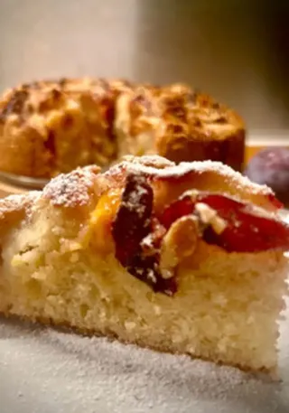

Muffin ai mirtilli e cioccolato bianco
Muffin soffici con mirtilli freschi e scaglie di cioccolato bianco: perfetti per la colazione o da portare a una festa.

Sono arrivate anche le prugne della tenuta ed è domenica... Quindi? Si va di dolce. Soffice e morbida, la torta di prugne fresche è un dolce casalingo 'da credenza' davvero delizioso. Si prepara con yogurt e formaggio spalmabile al posto di burro e uova. Grazie alla dolcezza e alla leggera acidità delle prugne il risultato sarà sorprendente.
Ricetta di Egi, pubblicata originariamente sul suo profilo Al.ta Cucina ↗.
Lava e taglia a fette le prugne cospargile con un po' di zucchero, qualche goccia di limone e cannella o cardamomo secondo i gusti.
Con le fruste mescola insieme yogurt, formaggio, zucchero e zeste di limone.
Unisci, alternando, le farine e il lievito con la bevanda vegetale e l'olio.
Rivesti una tortiera di cm. 22 con carta forno, versa l'impasto, ricorpri con le fette di prugna e termina con una spolverata di zucchero.
Cuoci in forno ventilato a 180/190° per 40 minuti.
Prima di servire cospargi la superficie con zucchero a velo.
Qualche fetta di prugna nell'impasto aiuterà a rendere il dolce più profumato e morbido. Questo impasto è un'ottima base per dolci alla frutta. Con le medesime quantità puoi preparare dei muffin.
Muffin soffici con mirtilli freschi e scaglie di cioccolato bianco: perfetti per la colazione o da portare a una festa.
Muffin morbidi a base di banane mature, con un croccante crumble alle mandorle in superficie: perfetti per recuperare la frutta troppo matura.
Una torta veloce alla cannella e mela cotta direttamente nella tazza, pronta in pochi minuti al microonde o in forno.